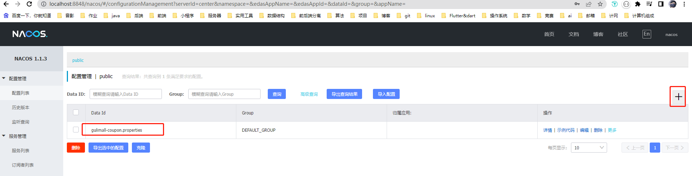
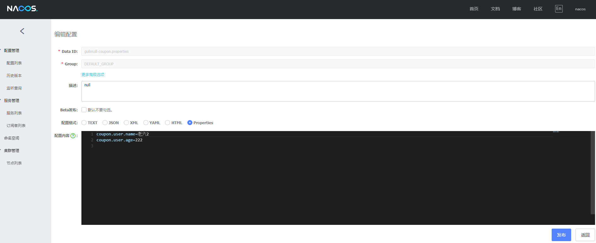
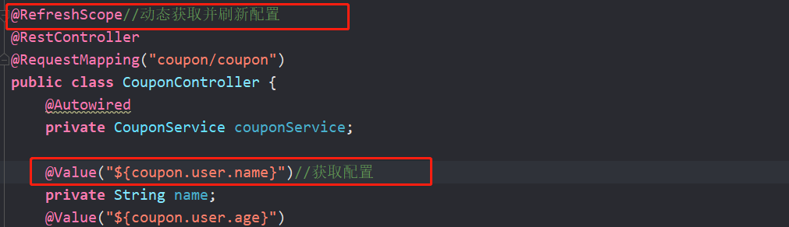
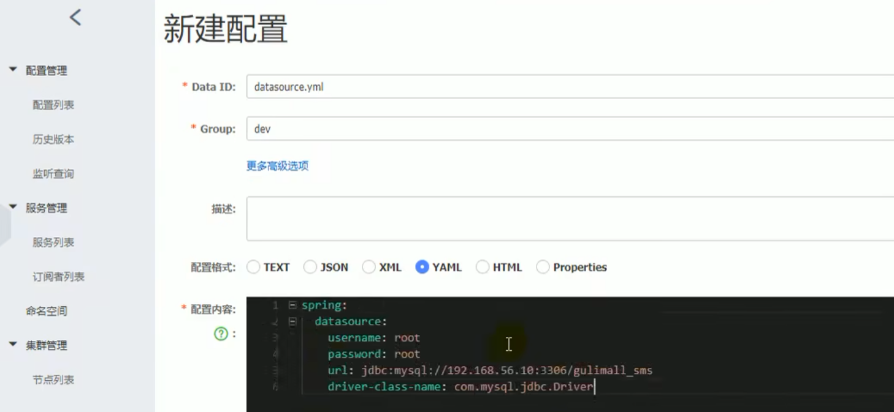
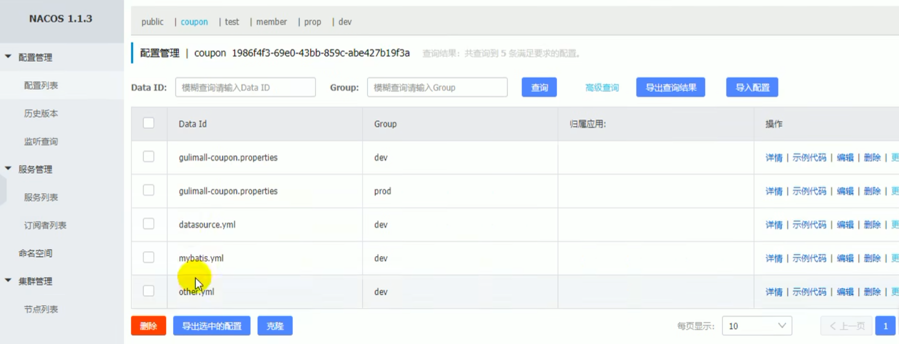
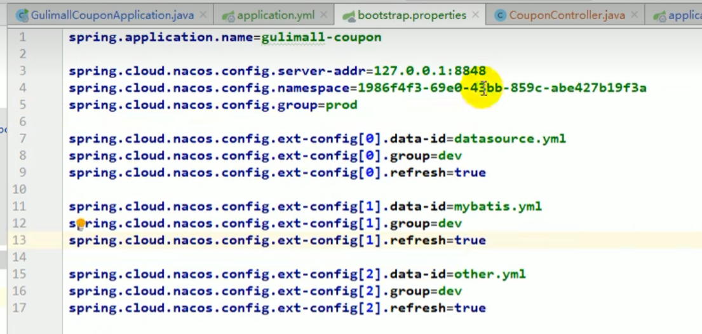

谷粒商城学习记录
微服务
SpringCloud Alibaba-Nacos[作为配置中心]
如何使用Nacos作为配置中心同意管理配置：
引入依赖
<!--配置中心来做配置管理--> <dependency> <groupId>com.alibaba.cloud</groupId> <artifactId>spring-cloud-starter-alibaba-nacos-config</artifactId> </dependency>创建一个bootstrap.properties文件
spring.application.name=gulimall-coupon spring.cloud.nacos.config.server-addr=127.0.0.1:8848
需要给配置中心默认添加一个叫数据集的(Data Id) gulimall-coupon.properties.。默认规则：应用名.properties


给应用名.properties添加任何配置
动态获取配置
@RefreshScope//动态获取并刷新配置 @Value("${coupon.user.name}")//获取配置
如果配置中心和当前应用的配置文件中都配置了相同的项，优先使用配置中心的配置
细节
命名空间:配置隔离;
默认: public(保留空间);默认新增的所有配置都在public空间。
- 开发，测试，生产:利用命名空间来做环境隔离。注意:在bootstrap.properties;配置上，需要使用哪个命名空间下的配置，spring,cloud,nacos,config,namespace=67c0dde5-2912-4dd0-bd98-6d87307f5758
- 每一个微服务之间互相隔离配置，每一个微服务都创建自己的命名空间，只加载自己命名空间下的所有配置
配置集
所有配置的结合
配置集ID：类似文件名
Data ID:文件名
配置分组
默认所有的配置集都属于: DEFAULT GROUP;1111，618，1212
每个微服务创建自己的命名空间，使用配置分组区分环境，dev，test，prod
同时加载多个配置集
微服务任何配置信息，任何配置文件都可以放在配置中心中
只需要在bootstrap.properties说明加载配置中心中哪些配置文件即可
@Value, @ConfigurationProperties。
以前SpringBoot任何方法从配置文件中获取值，都能使用
配置中心有的优先使用配置中心中的



本博客所有文章除特别声明外，均采用 CC BY-NC-SA 4.0 许可协议。转载请注明来自 lcdzzz的博客！